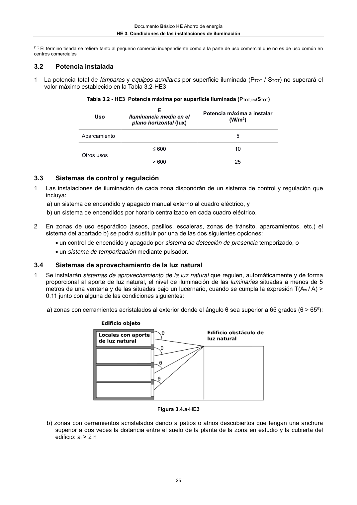

DB-HE · 3.2 Potencia instalada · 3.3 Sistemas de control y regulación · 3.4 Sistemas de aprovechamiento de la luz natural · versión 2022-06-14
SHA256: 7f890bd495552e979f83f72c5f5c7b642e745911a8e343a7b5b73023ce0e1f05 · página física 25 de 56 · métodos de encabezado
solo si están cotejados.
Formatos: Markdown · JSON de bloques · PDF p. 25 · imagen PNG
Documento Básico HE Ahorro de energía HE 3. Condiciones de las instalaciones de iluminación 25 (10) El término tienda se refiere tanto al pequeño comercio independiente como a la parte de uso comercial que no es de uso común en centros comerciales 3.2 Potencia instalada 1 La potencia total de lámparas y equipos auxiliares por superficie iluminada (PTOT / STOT) no superará el valor máximo establecido en la Tabla 3.2-HE3 Tabla 3.2 - HE3 Potencia máxima por superficie iluminada (PTOT,lim/STOT) Uso E Iluminancia media en el plano horizontal (lux) Potencia máxima a instalar (W/m2) Aparcamiento 5 Otros usos ≤ 600 10 > 600 25 3.3 Sistemas de control y regulación 1 Las instalaciones de iluminación de cada zona dispondrán de un sistema de control y regulación que incluya: a) un sistema de encendido y apagado manual externo al cuadro eléctrico, y b) un sistema de encendidos por horario centralizado en cada cuadro eléctrico. 2 En zonas de uso esporádico (aseos, pasillos, escaleras, zonas de tránsito, aparcamientos, etc.) el sistema del apartado b) se podrá sustituir por una de las dos siguientes opciones: un control de encendido y apagado por sistema de detección de presencia temporizado, o un sistema de temporización mediante pulsador. 3.4 Sistemas de aprovechamiento de la luz natural 1 Se instalarán sistemas de aprovechamiento de la luz natural que regulen, automáticamente y de forma proporcional al aporte de luz natural, el nivel de iluminación de las luminarias situadas a menos de 5 metros de una ventana y de las situadas bajo un lucernario, cuando se cumpla la expresión T(Aw / A) > 0,11 junto con alguna de las condiciones siguientes: a) zonas con cerramientos acristalados al exterior donde el ángulo θ sea superior a 65 grados (θ > 65º): Figura 3.4.a-HE3 b) zonas con cerramientos acristalados dando a patios o atrios descubiertos que tengan una anchura superior a dos veces la distancia entre el suelo de la planta de la zona en estudio y la cubierta del edificio: ai > 2 hi
